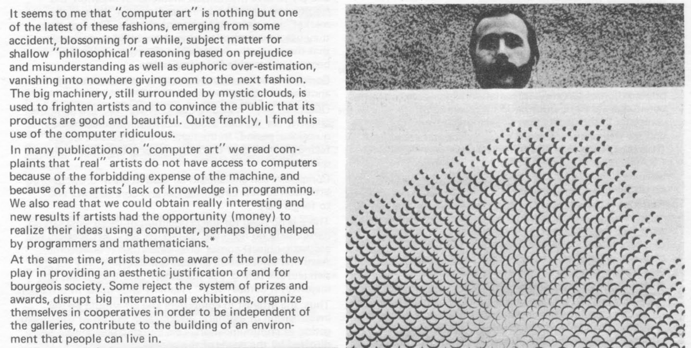

Coracle is a portable generative/art/sketch playground written in Kotlin
Web Demos Android Demo Articles
Getting Started
Everything happens in Jetbrains IDEA, clone the Coracle repository and open the web, Korge, or Android project.
Platforms
Choose a platform:
Web Android Korge: JVM, iOS, Linux, Windows, MacOS

Computer art pioneer Frieder Nake
Reference
Structure
Coracle uses the same basic sketch pattern as Processing, you initialise state in setup(), then mutate values and update the screen in draw()
class MyDrawing: Drawing() {
override fun setup() {
//Setup state
}
override fun draw() {
//Draw in the main draw loop
}
}
size(width, height) - set the window size, this should be the first line in setup(): size(300, 200). Ignored on Android which uses the width and height of the CoracleView.
matchWidth() - use within draw() drawing width will fill the containing layout/window (especially useful for the web for building banners)
matchHeight() - use within draw() drawing height will fill the containing layout/window
matchWindow() - use within draw() drawing will fill the containing layout/window, useful for fullscreen mobile web apps.
background(colour) - clears the window, usually the first line in the draw loop: background(0xffffff)
background() - clears the window, using the host/parent layout/screen/window background colour. With this method your Drawings can match any light/dark theming changes in your Android or Web program.
foreground(colour, alpha) - draws over the window, use at the end of the draw loop without calling background: foreground(0xffffff, 0.1f)
noLoop() - not all drawings animate, this cancels the draw loop, call at the end of draw() when you're done.
Primitives
Inbuilt Objects
Line Circle Point Bezier CatmullRomSpline Colour Polyline Rect
Direct Draw Methods
circle(x, y, r) - draws a circle centred at x,y with radius r: circle(width/2, height/2, 200)
line(x1, y1, x2, y2) - draws a line in the current stroke colour: line(0, 0, width, height)
point(x, y) - draws a point in the current stroke colour at the given coordinate: point(width/2, height/2)
text(text, x, y, size) - draws text in the current fill colour: text("Hello, Coracle", width/2, height/2, 22)
Colour
Coracle uses integers in hexadecimal notation, eg. black: 0x000000, white: 0xffffff, magenta: 0xff00cc
There's also a Colour primitive for more complex use-cases (with an interchangeable Color type alias for people who spell colour incorrectly).
Setting
fill(colour) - sets the fill colour and turns fill mode on: fill(0xff00cc)
fill(colour, alpha) - sets the fill colour with transparency and turns fill mode on: fill(0xff00cc, 0.5f)
noFill() - turns off fill mode, primitives will draw with a wireframe border
stroke(colour) - sets the stroke colour and turns stroke mode on: stroke(0x00ff00)
stroke(colour, alpha) - sets the stroke colour and transparency and turns stroke mode on: stroke(0x00ff00, 0.25f)
noStroke() - turns off stroke, primitives will only draw using the fill colour
Creating
color(r, g, b) - returns a colour integer: val blue = colour(0, 0, 255)
Colour(c) - returns a colour object: val blue = Colour(0x0000ff)
Colour(r, g, b) - returns a colour object: val blue = Colour(0, 0, 255)
Why not just use Processing?
I think in Kotlin and I wanted something ridiculously lightweight that could still be used to create advanced animations.
Goals/Non Goals
- Goals: Have fun, experiment.
- Non Goals: performance, correctness, everything else.
License
You probably don't want to use this, it was an itch I needed to scratch and there will be no support whatsoever.
I've not decided on a license yet, but if you think it was okay for the FSF to readmit Richard Stallman you can't use it.
Important
Trans rights are human rights, this framework kills fascists
Made by Orllewin